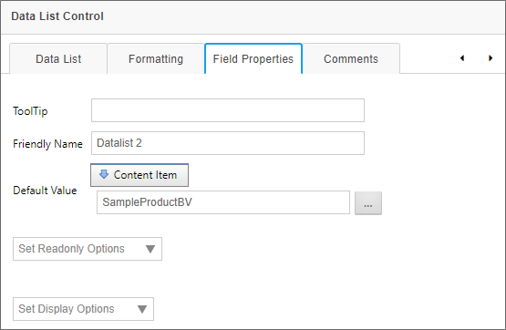

Data List
Data List

The Data List control enables the display of table data of nearly any size for display on a Process Director Form. Prior to Process Director v6.0.100, the only method of displaying tabular data was through the use of Array controls. Array controls, however, can only display relatively large sets of tabular data when the array controls are disabled and displayed only as text. Otherwise, the use of a large number of active controls in a Form array uses excessive system resources, and will make the form nonfunctional after a certain number of fields.
The Data List control, on the other hand, completely solves the issue of presenting and using large data sets on a Form. Data can be selected by cell or by row, and transferred from the Data List cell or row to a separate set of Form fields (either regular or Array fields). For example, in the screen shot below, the Data List is displaying a recordset containing 1,369 rows of data on a Form, with no perceptible loss of Form performance or resource usage.

The following fields are available to configure the Data List control.
Name: The Control's name.
No Selection / Cell Selection / Row Selection: This property enables you to specify the method, if any, that will be used to select data in the control. Cell Selection will, when selected, enable users to select a specific cell in the list, in order to extract the cell's data. Row selection will, as the name implies, select the entire data row, to extract data from all of the cells in the selected row.
Width: Sets the display width of the control on the form, in either percent or pixels. In most cases, a setting of 100% is the appropriate value for this property.
Height: Sets the display width of the control on the form, in either percent or pixels. In most cases, this property should not be set, unless the vertical height of the data to be displayed is fixed and known beforehand. Since this control enables pagination, and thus provides end users with the ability to select a different number of rows to display, the height of the control should be left free for the display height to vary automatically, as different pagination options are selected. Similarly, changes in screen width when the control is displayed may cause the data in each cell to wrap at smaller screen widths, increasing the overall height of the data's cell, and, by extension, the entire control's vertical height. Thus, in most cases, you'll want to leave this property blank.
Pagination: Enables the pagination feature to enable users to page through the data, rather than displaying it in a long, unbroken table. End users can elect to display 10, 20, or 50 records per page when Pagination is enabled.
Grouping: Enables the grouping feature. Users can select a specific column to group all records, in alphabetical order, by the value in the selected column.
Sorting: Enables the sorting feature, to allow users to sort the table data in ascending or descending order by clicking on the column header of the desired column they wish to sort.
Column Filtering: Enables users to filter the contents of the list, by adding a text box and filtering criteria to the header of each column.

Users can filter the data by one or more columns by adding the desired filter term in the text box, then selecting a filter type from the adjacent dropdown menu button. The following filter methods are available from the dropdown menu:
- No Filter: Removes the filter from the column.
- Contains: The column data contains the specified text.
- Does Not Contain: The column does not contain the specified text.
- Starts With: The column data begins with the specified text.
- Ends With: The column data ends with the specified text.
- Equal To: The column data exactly matches the specified text.
- Not Equal To: The column data does not exactly match the specified text.
- Greater Than: For numerical values, the column data returns only values greater than the specified number.
- Less Than: For numerical values, the column data returns only values less than the specified number.
- Greater Than or Equal To: For numerical values, the column data returns only values greater than or equal to the specified number.
- Less Than or Equal To: For numerical values, the column data returns only values less than or equal to the specified number.
- Between: For numerical values, when the text box is supplied with two different numbers, separated by a space, e.g., "60 70", the filter will return data where the values are between 60 and 70 (including 60 and 70).
- Not Between: For numerical values, when the text box is supplied with two different numbers, separated by a space, e.g., "60 70", the filter will return data where the values are not between 60 and 70 (including 60 and 70).
- Is Empty: Returns column data where the field value is NULL, or has no value.
- Not Is Empty: Returns column data where the field value is not NULL, or has a value.
- Is Null: Returns column data where the field value is NULL.
- Not Is Null: Returns column data where the field value is not NULL.
Virtualization: Enables data virtualization for the list data.
Static Header: Fixes the position of the column headers, so that they don't scroll with the rest of the data when scrolling the list vertically.
Export to CSV: Displays an CSV export icon that, when clicked, will export the list data to a CSV file.
Export to PDF: Displays a PDF export icon that, when clicked, will export the list data to a PDF file.
Refresh: Displays a refresh icon that, when clicked, will refresh the list data. This property is useful for list data that may change with greater frequency than usual.
Configuring the List Data
The Field Properties for the data list control are accessible from the Form Controls tab of the Form definition and, for appropriately licensed installations, from the Design Console of the Online Form Designer. One of the Data List control's Field Properties, the Default Value property, must be set to an appropriate Content List item, usually a Business Value.

In this example, the Default Value is provided via a Business Value named SampleProductBV. When the Form first opens, the SampleProductBV will be called, and the Data List will be automatically populated with the data returned by this Business Value. The data will be cached in memory until the Form is closed. Only clicking the Refresh icon, if it's displayed, or closing and re-opening the form, will refresh the data displayed in the Data List control.